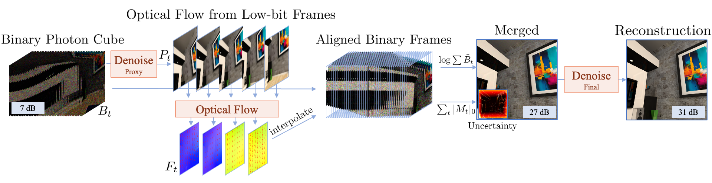

Die drop I
Average of 77Burst-gQIRUnSPAD
University of Maryland, College Park
WACV 2027
We introduce UnSPAD, an uncertainty-aware burst photography framework capable of fusing and denoising arbitrarily long sequences of binary single photon avalanche diode (SPAD) measurements. Unlike prior methods that require fixed burst lengths or rely on powerful generative priors, UnSPAD combines learned motion estimation with uncertainty-informed measurement fusion and denoising to produce temporally consistent, hallucination-free reconstructions. UnSPAD first forms an initial scene estimate by averaging flow-aligned binary frames. UnSPAD then uses per-pixel uncertainty maps to perform uncertainty-aware denoising; the denoiser is informed about which regions accumulated the fewest observations (and thus contain the most relative shot noise) due to motion, occlusion, or alignment errors. This two-step reconstruction pipeline helps mitigate hallucinations—outside of the structure implicitly introduced by the flow estimates, the initial scenes estimates are entirely prior-free. Experiments on real and simulated SPAD and quantum image sensor (QIS) benchmarks demonstrate state-of-the-art reconstruction quality, improved temporal consistency, and superior color fidelity relative to the state of the art.
UnSPAD aligns 1-bit SPAD frames using optical flow computed from low-bit proxy frames. The aligned burst produces a high-quality initial estimate; a final denoiser then uses an uncertainty map to focus on under-observed regions caused by motion, occlusion, or alignment errors.

All sequences are reconstructed at 850 fps and visualized at 30 fps. Videos are downsampled to 512 × 512 for the web.
Unlike generative methods, UnSPAD preserves scene structure over time. When the lights turn off in this sequence, generative baselines change the shape of the vase; UnSPAD remains consistent.
@inproceedings{shah2027unspad,
title = {UnSPAD: Uncertainty-aware Single Photon Burst Photography},
author = {Shah, Sachin and Bhetwal, Kalyan and Burner, Levi and
Metzler, Christopher A.},
booktitle = {Proceedings of the IEEE/CVF Winter Conference on
Applications of Computer Vision (WACV)},
year = {2027}
}